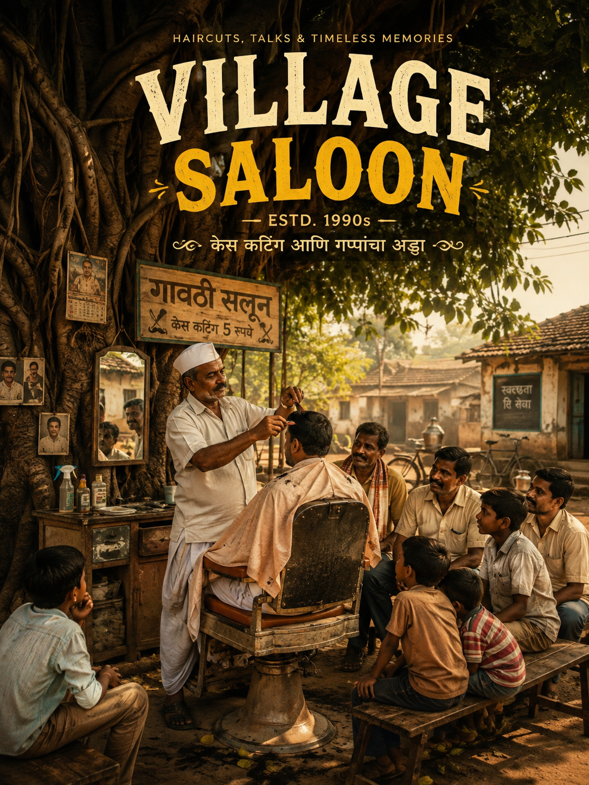

EST. 1990s · VILLAGE MEMORIES
47
online
केस कटिंग · गप्पा · आठवणी
Village
Saloon
केस कटिंग आणि गप्पांचा अड्डा
“पाच रुपयांची कटिंग… पण आठवणी अमूल्य.”

BARBER SONGS — 90's Bollywood Songs Collection
YouTube · Village Saloon
⏮
▶
⏭